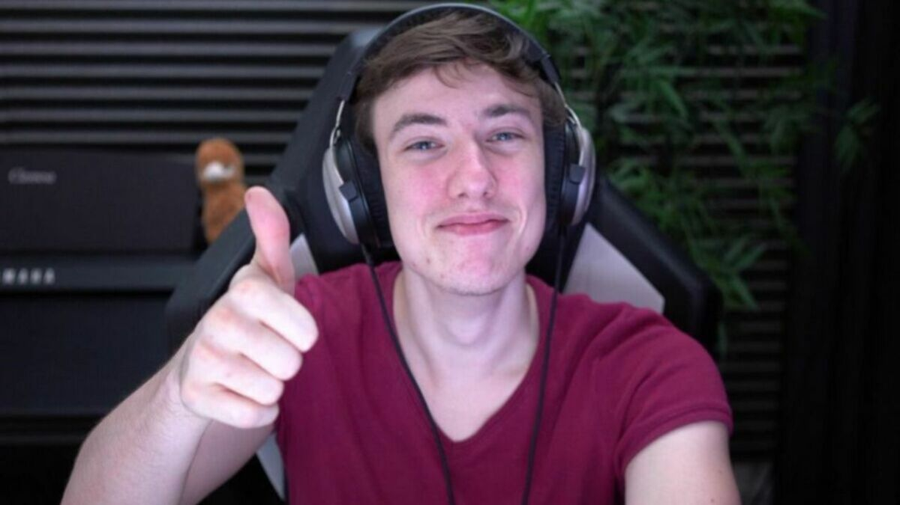

Nouvelle Vidéo de Dark soules
JOSPLAY
Sardoche
Guide Complet pour Progresser dans le Jeu Dark Souls
1. Premiers Pas
a. Création de Personnage
Classe de Départ : Choisissez une classe de départ adaptée à votre style de jeu (Guerrier pour une approche directe, Mage pour la magie, etc.). La classe ne détermine pas votre progression mais offre un point de départ avec des compétences et un équipement spécifiques.
Attributs : Concentrez-vous sur les attributs qui correspondent à votre classe choisie. Par exemple, le Guerrier devrait investir dans la Force et l'Endurance.
b. Comprendre les Bases du Jeu
Commandes : Familiarisez-vous avec les commandes de base : attaque, esquive, blocage et utilisation d’objets.
Stamina : Gérez votre endurance pour pouvoir attaquer, bloquer et esquiver efficacement.

2. Début du Jeu et Exploration
a. Premier Boss : L'Asylum Demon
Stratégie : Utilisez les environnements à votre avantage, comme les hauteurs pour éviter les attaques directes.
Loot : Ramassez les objets importants comme l’Estus Flask pour restaurer votre santé.
b. Bonfire et Leveling
Feux de Camp (Bonfires) : Utilisez les feux de camp pour vous reposer, restaurer votre santé et sauvegarder votre progression.
Level Up : Dépensez vos âmes (souls) pour monter de niveau et améliorer vos attributs.

3. Combat et Stratégie
a. Gestion de l'Endurance
Attaques et Esquives : Ne dépensez pas toute votre endurance en une seule attaque. Gardez de l’endurance pour esquiver ou bloquer.
Positionnement : Restez mobile et apprenez les mouvements des ennemis pour éviter les attaques.
b. Utilisation des Armes et de l'Équipement
Armes : Expérimentez avec différentes armes pour trouver celle qui convient le mieux à votre style de jeu. Certaines armes sont plus efficaces contre certains types d'ennemis.
Armure : Choisissez une armure qui offre un bon équilibre entre protection et mobilité.

c. Magie et Incantations
Sorts : Apprenez et utilisez des sorts pour attaquer à distance ou renforcer vos capacités.
Incantations : Utilisez des incantations pour des buffs, des soins ou des attaques magiques.
4. Exploration et Découverte
a. Les Zones Clés
Undead Burg : Explorez ce premier grand niveau pour obtenir des équipements essentiels et des clés pour progresser.
Darkroot Garden : Une zone optionnelle avec des objets puissants et des ennemis redoutables.
Sen's Fortress : Un donjon complexe avec des pièges et des ennemis puissants.
b. Secrets et Objets Cachés
Chemins Cachés : Cherchez des chemins secrets et des murs illusoires pour découvrir des objets précieux et des raccourcis.
NPCs : Parlez aux PNJ pour obtenir des quêtes, des objets uniques et des informations utiles.
5. Boss et Ennemis
a. Stratégies de Boss
Géants et Boss Immenses : Utilisez la stratégie de l'esquive pour éviter les attaques puissantes. Visez les points faibles.
Boss Multiples : Gérez les phases du combat en attaquant les boss un par un lorsque possible.

b. Ennemis Élites
Groupes d'Ennemis : Attaquez un ennemi à la fois et utilisez les couloirs pour éviter les attaques multiples.
Évitez les Pièges : Soyez attentif aux pièges environnementaux comme les flèches empoisonnées.

6. Amélioration Continue
a. Leveling et Amélioration d'Équipement
Amélioration des Armes : Utilisez des matériaux pour améliorer vos armes et armures, augmentant ainsi leur efficacité.
Attributs : Ajustez vos attributs en fonction des besoins spécifiques de votre build.
b. Révision des Stratégies
Analyse des Échecs : Revoyez vos échecs pour comprendre les erreurs et améliorer vos stratégies.
Adaptation : Changez votre approche en fonction des ennemis et des boss rencontrés.
7. Multijoueur et Communauté
a. Coopération
Inviter des Joueurs : Utilisez les objets comme les Signes de Summon pour inviter d'autres joueurs à vous aider contre des boss ou des sections difficiles.
Assistance : Offrez votre aide à d'autres joueurs en plaçant des Signes de Summon dans leur monde.
b. PvP
Combat Joueur contre Joueur : Participez aux combats PvP dans des zones spécifiques pour tester vos compétences contre d’autres joueurs.
c. Forums et Guides
Communautés : Participez à des forums et des communautés en ligne pour échanger des conseils, stratégies et expériences.
Guides : Consultez des guides et des vidéos pour des stratégies spécifiques et des astuces avancées.